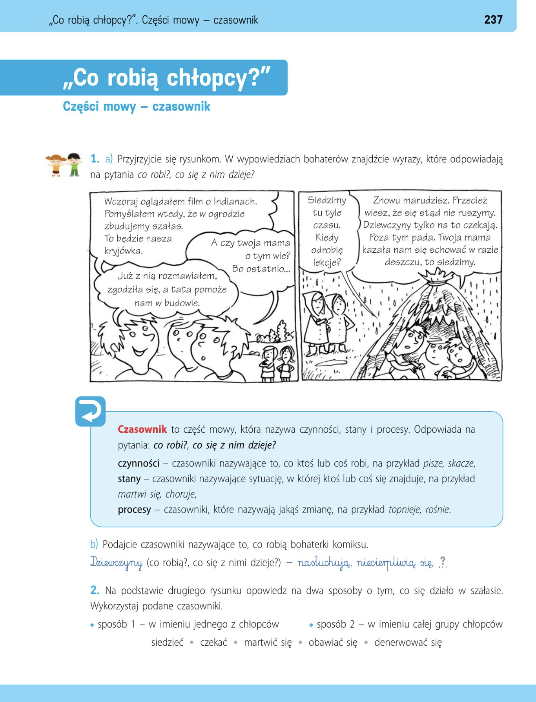
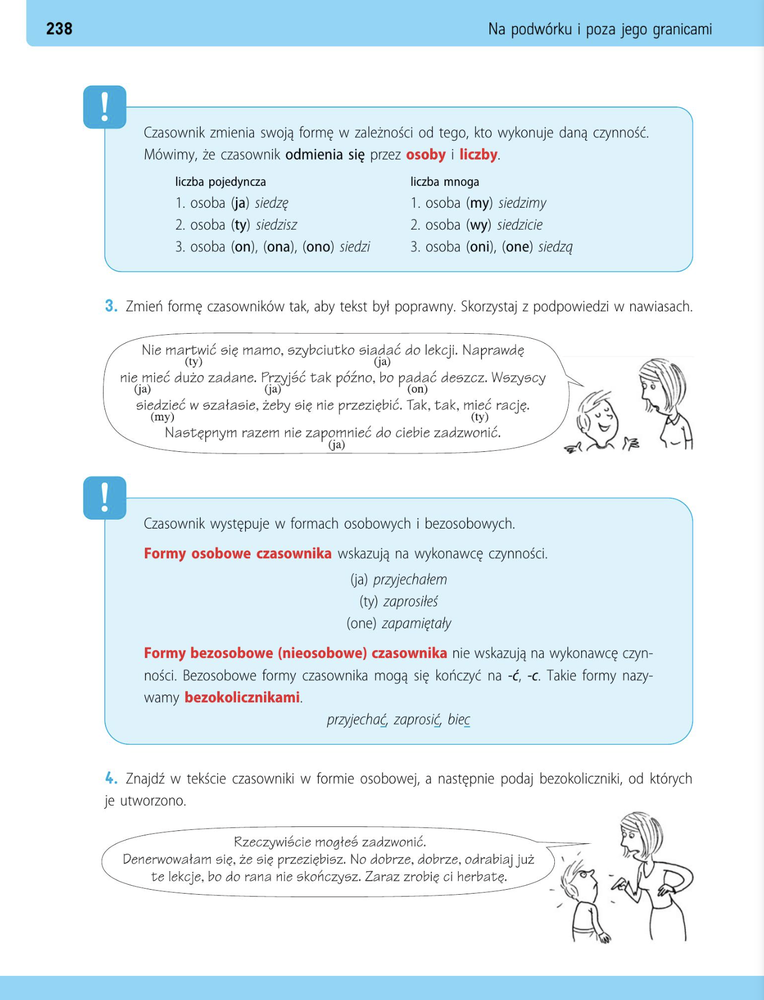
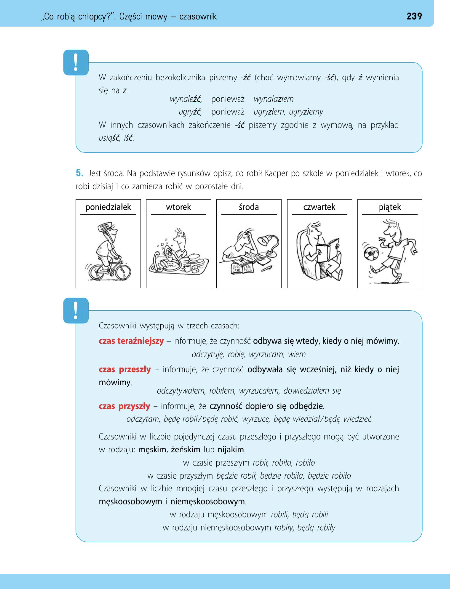
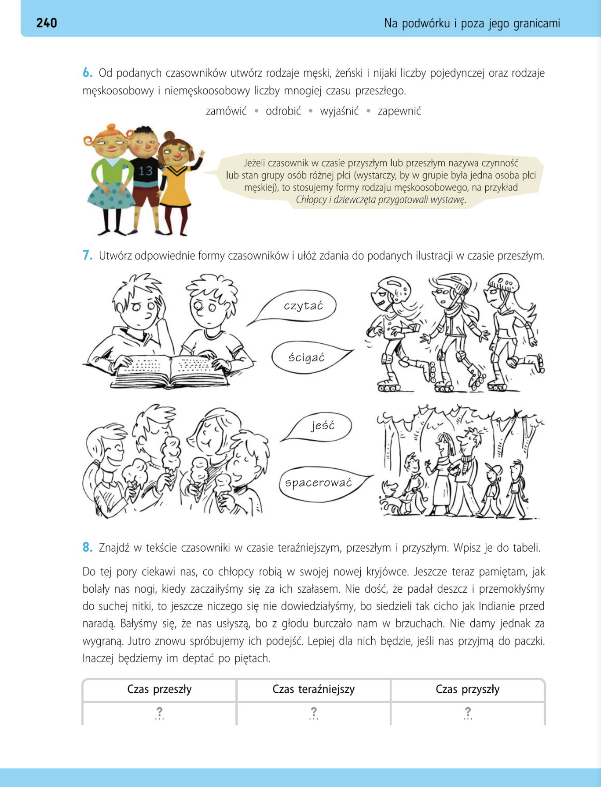

Popatrz na pytanie:
Co robią chłopcy?
Odpowiedz:
Chłopcy ____________________
Jakie słowa opisują to, co ktoś robi?
________________________________




W wypowiedziach bohaterów znajdź słowa, które odpowiadają na pytania:
- co robi?
- co się z nim dzieje?
Kliknij wszystkie słowa, które są czasownikami.
A czy twoja mama o tym wie? Bo ostatnio...
Już z nią rozmawiałem, zgodziła się, a tata pomoże nam w budowie.
Siedzimy tu tyle czasu. Kiedy odrobię lekcje?
marudzisz. Przecież wiesz, że ruszymy. Dziewczyny tylko na to czekają. Poza tym pada. Twoja mama kazała nam schować w razie deszczu, to siedzimy.
oglądałem, pomyślałem, zbudujemy, będzie, wie, rozmawiałem, zgodziła, pomoże, siedzimy, odrobię, marudzisz, wiesz, ruszymy, czekają, pada, kazała, schować, siedzimy
1. Chłopcy budują szałas.
2. W lesie można zrobić szałas.
1. To będzie nasza kryjówka.
2. Dzieci znalazły dobrą kryjówkę.
1. Muszę odrabiać lekcje.
2. On odrabia lekcje wieczorem.
Czasownik
Czasownik to część mowy, która nazywa:
- czynności
- stany
- procesy
Czasownik odpowiada na pytania:
co robi? / co się z nim dzieje?
Zapamiętaj!
Czasownik mówi nam, co ktoś robi albo co się dzieje.
1. Czynności — co ktoś robi
skacze — прыгает
2. Stany — w jakiej sytuacji ktoś się znajduje
choruje — болеет
3. Procesy — zmiana
rośnie — растёт
Jakie czasowniki opisują to, co robią dziewczyny na obrazku?
Dziewczyny:
________________________
________________________
nasłuchują
niecierpliwią się
Odmiana czasownika
Czasownik zmienia formę w zależności od tego, kto wykonuje czynność.
Mówimy, że czasownik odmienia się przez:
- osoby
- liczby
| Liczba pojedyncza | Liczba mnoga |
|---|---|
| ja siedzę | my siedzimy |
| ty siedzisz | wy siedzicie |
| on / ona / ono siedzi | oni / one siedzą |
1. Co oznacza czasownik?
2. Na jakie pytanie odpowiada czasownik?
Wykorzystując wskazówki znajdujące się w nawiasach, zmień formę czasowników, w celu utworzenia poprawnego tekstu.
Nie (martwić, ty) się mamo, szybciutko (siadać, ja) do lekcji.
Naprawdę (nie mieć, ja) dużo zadane.
(Pryjść, ja ) tak późno, bo (padać, on) deszcz.
Wszyscy (siedzieć , my) w szałasie, żeby się nie przeziębić. Tak, tak, (mieć, ty) racje. Następnym razem nie (zapomnieć, ja) do ciebie zadzwonić.
Nie martw się mamo, szybciutko siądę do lekcji. Naprawdę nie mam wielu zadań. Przyszłam tak późno, bo padał deszcz. Wszyscy siedzieliśmy w szałasie, żeby się nie przeziębić. Tak, tak miałeś rację. Następnym razem nie zapomnę do ciebie zadzwonić.
Formy czasownika
Czasownik występuje w dwóch formach:
1. Formy osobowe
pokazują kto wykonuje czynność
ja przyjechałem ty zaprosiłeś one zapamiętały
2. Formy bezosobowe
nie wskazują wykonawcy czynności
Takie formy nazywamy bezokolicznikiem.
np. przyjechać, zaprosić, biec
W zakończeniu bezokolicznika piszemy:
-źć gdy w innych formach pojawia się z
wynaleźć → wynalazłem
ugryźć → ugryzłem
W innych czasownikach piszemy -ść
usiąść iść
Jest środa. Na podstawie rysunków opisz, co robił Kacper po szkole w poniedziałek i wtorek, co robi dzisiaj i co zamierza robić w pozostałe dni. Opisz co robi Kacper.
| dzień | zdanie |
|---|---|
| poniedziałek | |
| wtorek | |
| środa | |
| czwartek | |
| piątek |